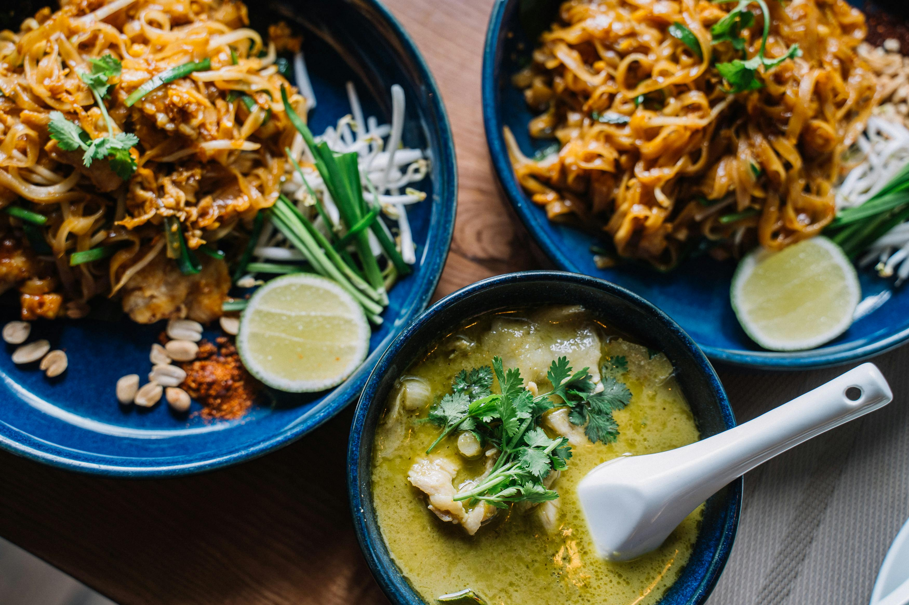
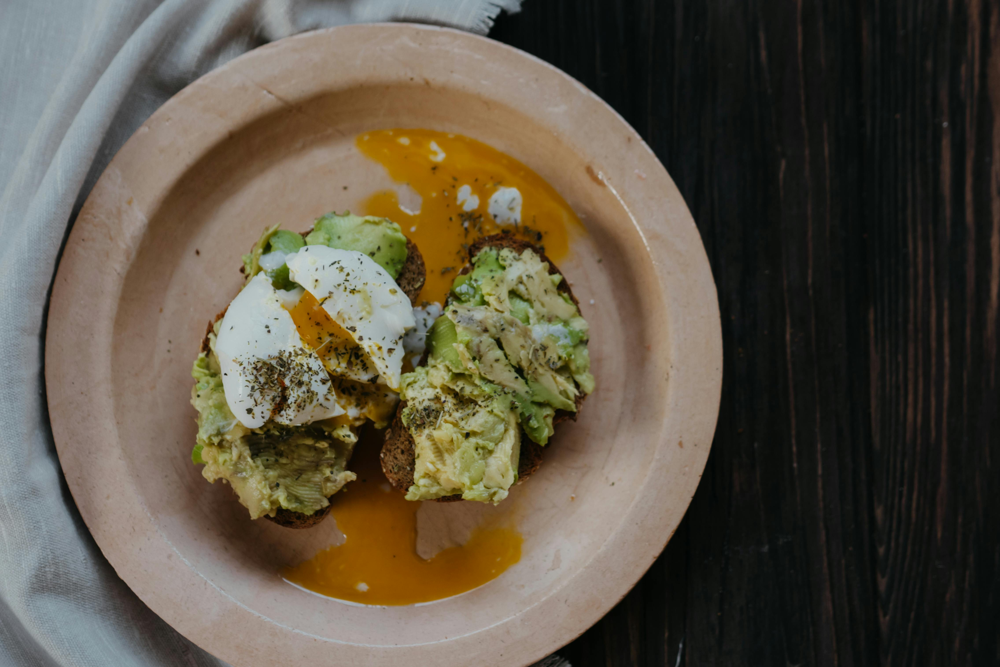
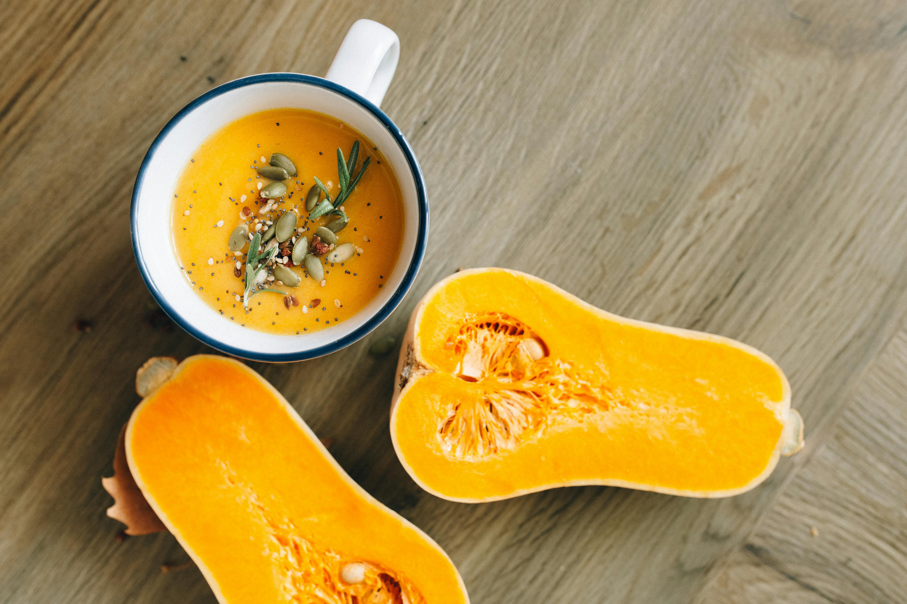

Spicy Thai Peanut Noodles
A crave worthy inspired dish by the streets of Bangkok, these thai peanut noodles are the perfect blend aof comfort and spice. Tender rice noodles are tossed ina rich, house made peanut sauce infused with fresh garlic, ginger, soy sauce, and a dash of red pepper flakes. Finished with shredded carrots, bell peppers and green onions with a squeeze of lime for added tang. The peanuts and cilantro give it a nice texture and color for a satisfying bowl that delivers bold flavors in each bite.
Go to recipe
Avocado Toast with Poached Egg
This dish starts with a thick cut sourdough toasted slice of perfection. Creamy avocado is hand mashed with sea salt and a silky poached egg is gently placed on top. Sprinkled with cracked black pepper and a hint of lemon juice making it a perfect combination of healthy and satisfying!
Go to recipe
Roasted Butternut Squash Soup
This smooth butternut squash soup is the ultimate comfort in a bowl. Slow roasted squash is blended with tender carrots, sauteed onions, and fresh garlic to create a naturally sweet and savory base. Infused with creamy coconut milk for a nice luxrious texture.
Go to recipe